| Ant Attack | Animations |
An object's picture in Ant Attack is one number, worked out afresh every frame by PROJECT_SPRITES: the first frame in its record (+3: the boy $DC, the girl $6C, an ant $F8), plus four times its animation frame (+8), plus its facing turned by the view -- or, when +8 has bit 7 set, +8 itself, outright. Frame f is the 64 bytes at $8000 + 64f (DRAW_SPRITE). So an animation is whatever writes +8: CHOOSE_FRAME for the two people, whose five poses -- standing, walking, arms out, lying, arms up -- are the animation frames 0 to 4; MOVE_ANT for an ant, which has only 0 and 1; THROW_GRENADE for the grenade in flight ($F4 outright, and the thrower's arms-out pose); and BLAST_FRAME and CHOOSE_FRAME for anything exploding ($F4 to $F7 outright).
Every animation below was made by running the game's own code in SkoolKit's simulator when these pages were built: a game started the way the build starts one, from the title screen, with the pieces put where the scene needs them at the end of a frame -- the player on open ground, an ant a few cells off, the ants not wanted parked outside the walls and paralysed -- and then one real frame of the game after another, each picture read off the screen. Only the starting positions are staged; the moving, the frame choices, the projection, the painting and the copy are the game's. Each picture lasts as long as the game took over it: the T-states from the copy to the screen that put it there to the next copy, at 3.5MHz and without the memory contention of a real Spectrum, which would be a little slower. A game frame takes about 140ms, some 500,000 T-states. Where a script plays -- a tune with its letters between the notes, all inside one frame of the game -- the screen is read every fiftieth of a second instead, and FLASH is drawn in the phase the ULA would be in. Identical pictures in a row are one. Each GIF is cropped to the 16 by 16 boxes the game drew its sprites in (from their places in PLANES, through PLANE_TO_BUFFER), or shows the whole play area where words appear in it; under each, the sprite frames in each picture and how long it lasts.
Frames $F0-$F3 are never drawn. Nothing can produce them: +3 is only ever $DC, $6C, $68 or $F8 (BASIC's POKEs and DATA), the writers of +8 above give 0-4, $F4-$F7 or $F4, and no first frame plus 4 x (0 to 4) plus a facing lands in $F0-$F3 (the boy's would need animation frame 5, an ant's -2). That is read from the code; and the runs on this page, which between them draw 33 of the 60 frames in the two sprite blocks, never draw one of the four. Of the others they do not draw, the grenade's own frames $68-$6B would be shown only at its home, $00, $40, far out of view; the rest ($74, $75, $76, $77, $78, $79, $7A, $7B, $7C, $7D, $7E, $7F, $E6, $E7, $E9, $EA, $EB, $EE, $EF) are poses and facings of the two people that these scenes happen not to show.
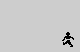 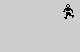
facing 0, y up
facing 1, x up
facing 2, y down
facing 3, x down
V held (READ_CONTROLS sets the move bit, +7 bit 2) on open ground, the view at 0, the other people and the ants parked out of the way. MOVE_OBJECT steps the boy a cell a frame, and CHOOSE_FRAME turns the animation frame (+8) over, 0, 1, 0, 1, while the move bit is set: the standing pose ($DC + facing) and the walking pose ($E0 + facing) take turns, one cell each. The facing added is the boy's own plus the view (PROJECT_SPRITES), so in view 0 it is the direction walked: 0 is y up, 1 x up, 2 y down, 3 x down. Each facing is its own GIF, eight steps from a frame standing; each picture is one frame of the game, about 150ms. The picture is fixed on the ground: where the view scrolls to keep the boy near the middle (SCROLL_VIEW) the picture scrolls with it.
Sprite frames drawn: $DC (MORE_SPRITES), $DD (FRAMEDD), $DE (FRAMEDE), $DF (FRAMEDF), $E0 (FRAMEE0), $E1 (FRAMEE1), $E2 (FRAMEE2), $E3 (FRAMEE3).
Facing 0, y up: in the picture: $E0 (150ms), $DC (150ms), $E0 (150ms), $DC (150ms), $E0 (150ms), $DC (140ms), $E0 (140ms), $DC (140ms): 8 pictures, 1.2s in all.
Facing 1, x up: in the picture: $E1 (140ms), $DD (140ms), $E1 (140ms), $DD (140ms), $E1 (140ms), $DD (140ms), $E1 (140ms), $DD (140ms): 8 pictures, 1.1s in all.
Facing 2, y down: in the picture: $E2 (140ms), $DE (140ms), $E2 (140ms), $DE (140ms), $E2 (140ms), $DE (140ms), $E2 (140ms), $DE (140ms): 8 pictures, 1.1s in all.
Facing 3, x down: in the picture: $E3 (140ms), $DF (150ms), $E3 (140ms), $DF (140ms), $E3 (150ms), $DF (140ms), $E3 (140ms), $DF (140ms): 8 pictures, 1.1s in all.
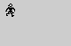 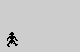 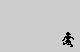 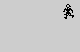
facing 0, y up
facing 1, x up
facing 2, y down
facing 3, x down
V held (READ_CONTROLS sets the move bit, +7 bit 2) on open ground, the view at 0, the other people and the ants parked out of the way. MOVE_OBJECT steps the girl a cell a frame, and CHOOSE_FRAME turns the animation frame (+8) over, 0, 1, 0, 1, while the move bit is set: the standing pose ($6C + facing) and the walking pose ($70 + facing) take turns, one cell each. The facing added is the girl's own plus the view (PROJECT_SPRITES), so in view 0 it is the direction walked: 0 is y up, 1 x up, 2 y down, 3 x down. Each facing is its own GIF, eight steps from a frame standing; each picture is one frame of the game, about 150ms. The picture is fixed on the ground: where the view scrolls to keep the girl near the middle (SCROLL_VIEW) the picture scrolls with it.
Sprite frames drawn: $6C (FRAME6C), $6D (FRAME6D), $6E (FRAME6E), $6F (FRAME6F), $70 (FRAME70), $71 (FRAME71), $72 (FRAME72), $73 (FRAME73).
Facing 0, y up: in the picture: $70 (150ms), $6C (150ms), $70 (150ms), $6C (150ms), $70 (150ms), $6C (140ms), $70 (140ms), $6C (140ms): 8 pictures, 1.2s in all.
Facing 1, x up: in the picture: $71 (140ms), $6D (140ms), $71 (140ms), $6D (140ms), $71 (140ms), $6D (140ms), $71 (140ms), $6D (140ms): 8 pictures, 1.1s in all.
Facing 2, y down: in the picture: $72 (140ms), $6E (140ms), $72 (140ms), $6E (140ms), $72 (140ms), $6E (140ms), $72 (140ms), $6E (140ms): 8 pictures, 1.1s in all.
Facing 3, x down: in the picture: $73 (140ms), $6F (150ms), $73 (140ms), $6F (140ms), $73 (150ms), $6F (140ms), $73 (140ms), $6F (140ms): 8 pictures, 1.1s in all.
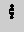
C held on open ground. Standing, MOVE_OBJECT takes the jump bit to RISE, which lifts the boy a block if the cell above is clear; with nothing under him, FALL lets him have one frame where he is and then drops him a block; LANDED lands him after two frames of falling, which stuns him for two frames (the arms-out pose, CHOOSE_FRAME) and counts as a step (a click, HANDLE_EVENTS). Then, C still held, again. His height frame by frame: 1, 1, 0, 0, 0, 0, 1, 1, 0, 0, 0, 0. A jump is one block up, and nothing sideways unless V is held too.
Sprite frames drawn: $DD (FRAMEDD), $E5 (FRAMEE5), $ED (FRAMEED).
In the picture: $DD (290ms), $ED (140ms), $E5 (290ms), $DD x2 (430ms), $ED (140ms), $E5 (290ms), $DD (140ms): 8 pictures, 1.7s in all.
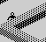
A wall one block high at $B3, $EE. V to walk up to it, then V and C together for one frame: RISE lifts the boy a block, and FALL's frame of grace lets him walk forward in the air -- onto the top of the wall. V again walks him off the far side, where the same grace carries him a cell out before he drops, and LANDED stuns him for two frames on landing. His height frame by frame: 0, 1, 1, 1, 1, 0, 0, 0, 0.
Sprite frames drawn: $DC (MORE_SPRITES), $E0 (FRAMEE0), $E4 (FRAMEE4), $EC (FRAMEEC).
In the picture: $E0 (140ms), $DC (140ms), $E0 (140ms), $DC (140ms), $E0 (140ms), $EC (140ms), $E4 (280ms), $DC (140ms): 8 pictures, 1.3s in all.
The boy put five blocks up over open ground. FALL gives him a frame where he is, then drops him a block a frame; CHOOSE_FRAME shows the arms-up pose (4) from the second frame of falling. He lands after 6 frames: five or more is a bad fall (LANDED), stunned for eight frames for each frame fallen -- 48 here -- and script 1 (NASTY FALL !). While the stun is five or more he lies flat (pose 3), then for the last four frames stands with his arms out (pose 2), then gets up: the whole thing took 57 frames of the game.
Sprite frames drawn: $DC (MORE_SPRITES), $E4 (FRAMEE4), $E8 (FRAMEE8), $EC (FRAMEEC).
In the picture: $DC (140ms), $EC x5 (700ms), $E8 (6540ms), $E4 (570ms), $DC (430ms): 9 pictures, 8.4s in all.
facing 0, y up
facing 1, x up
facing 2, y down
facing 3, x down
The fast ant (the first, +$0D 20, line 140's DATA) walking at the boy along each of the four directions. MOVE_ANT moves it and, when the move brought it closer to him, turns its animation frame over, 0, 1, 0, 1: $F8 + facing and $FC + facing, one foot and the other. That is the only thing that writes an ant's +8 apart from the blast (below), so an ant has two poses. ANT_TURN skips the move one frame in every +$0D: 20 for this ant, 2 -- every other frame -- for the others until the fourth rescue.
Sprite frames drawn: $F8 (FRAMEF8), $F9 (FRAMEF9), $FA (FRAMEFA), $FB (FRAMEFB), $FC (FRAMEFC), $FD (FRAMEFD), $FE (FRAMEFE), $FF (FRAMEFF).
Facing 0, y up: in the picture: $F8 (140ms), $FC (140ms), $F8 (140ms), $FC (140ms), $F8 (140ms), $FC (140ms): 6 pictures, 0.8s in all.
Facing 1, x up: in the picture: $F9 (140ms), $FD (140ms), $F9 (140ms), $FD (140ms), $F9 (140ms), $FD (140ms): 6 pictures, 0.8s in all.
Facing 2, y down: in the picture: $FA (140ms), $FE (140ms), $FA (140ms), $FE (140ms), $FA (140ms), $FE (140ms): 6 pictures, 0.8s in all.
Facing 3, x down: in the picture: $FB (140ms), $FF (140ms), $FB (140ms), $FF (140ms), $FB (140ms), $FF (140ms): 6 pictures, 0.8s in all.
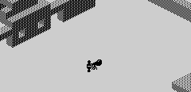
The fast ant two cells from the boy, facing him. Nothing is solid but the map, and the boy is not in it, so the ant walks straight into his cell (MOVE_OBJECT). The ant is in the map (TOGGLE_MAP_BIT), so on the boy's next move MOVE_OBJECT finds a block in his own cell: BITTEN, a bite, pushes him up a block, and HANDLE_EVENTS takes a point of energy and runs script 7 (BITTEN!). He falls back into the ant's cell and is bitten again: 3 bites in 14 frames. The screen is read every fiftieth of a second, so the words appear as the script prints them; the next frame's copy wipes them. The whole play area is shown, since that is where the words go.
Sprite frames drawn: $DD (FRAMEDD), $E5 (FRAMEE5), $ED (FRAMEED), $F8 (FRAMEF8), $F9 (FRAMEF9), $FA (FRAMEFA), $FB (FRAMEFB), $FD (FRAMEFD), $FE (FRAMEFE), $FF (FRAMEFF).
In the picture: $DD+$FB x2 (300ms), $DD+$F8 x2 (330ms), $DD+$F9 (140ms), $ED+$FE (140ms), $E5+$FB (160ms), $E5+$F8 x2 (330ms), $E5+$FB (140ms), $E5+$FA (150ms), $DD+$FD (140ms), $DD+$F9 (150ms), $DD+$FF (160ms), $DD+$F8 x2 (320ms), $DD+$F9 (150ms), $ED+$FE (500ms): 18 pictures, 3.1s in all.
F, the eight-frame throw, on open ground. THROW_GRENADE puts the boy in the arms-out pose for the frame of the throw (+8 = 2, at $8D22), starts the grenade in his cell and sets its frame outright to $F4 ($8D32); it then moves like anything else, a cell a frame. When the time runs out it stops and its explosion count (+9) is set to 5, with script 5, a sound with no words. MOVE_OR_RESPAWN counts +9 down before BLAST_FRAME picks the frame, $F4 + (count AND 3), so the counts drawn are 4, 3, 2, 1: $F4 -- the flight frame again, for the frame it bursts -- then $F7, $F6 and $F5. At 0 the grenade goes home, to $00, $40, out of view.
Sprite frames drawn: $DD (FRAMEDD), $E5 (FRAMEE5), $F4 (FRAMEF4), $F5 (FRAMEF5), $F6 (FRAMEF6), $F7 (FRAMEF7).
In the picture: $E5+$F4 (180ms), $DD+$F4 x7 (1180ms), $DD+$F7 (140ms), $DD+$F6 (140ms), $DD+$F5 (140ms), $DD (280ms): 12 pictures, 2.1s in all.
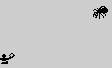
The fast ant walking at the boy from 14 cells, and a grenade thrown at it with D, four frames' flight. It bursts five to seven cells short of the ant -- the nearest start that does, found by running each -- and BLAST_ANT stuns it for 24 frames (+6), and again on each frame the blast lasts. MOVE_OBJECT does not move a stunned object, so MOVE_ANT finds the ant no closer each frame: it puts the animation frame back to 0 and turns the ant left or right at random (RANDOM). A stunned ant spins on the spot. It was stunned for 27 frames of the game in all here (the count goes down only on the frames it moves), then came on again.
Sprite frames drawn: $F4 (FRAMEF4), $F5 (FRAMEF5), $F6 (FRAMEF6), $F7 (FRAMEF7), $F8 (FRAMEF8), $F9 (FRAMEF9), $FA (FRAMEFA), $FB (FRAMEFB), $FF (FRAMEFF).
In the picture: $FB+$F4 (190ms), $FF+$F4 (150ms), $FB+$F4 (140ms), $FF+$F4 (140ms), $F8+$F4 (200ms), $F9+$F7 (140ms), $FA+$F6 (140ms), $FB+$F5 (140ms), $F8 (140ms), $F9 (140ms), $FA (140ms), $F9 (140ms), $F8 (140ms), $F9 (140ms), and so on: 34 pictures, 5.0s in all.
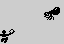
A slow ant (+$0D 2, as four of the five are on the first levels) walking at the boy from 7 cells, and a grenade thrown with D bursting within four cells of it: BLAST_ANT sets its explosion count, and script 3 (GOOD SHOT!). ANT_TURN calls BLAST_FRAME for the blast frame -- but then MOVE_ANT, which moves the ant, writes its animation frame again (0 or 1) after it. So the blast is drawn only in the frames the ant skips, when MOVE_ANT is not called: every other frame for a slow ant, which flickers between ant and blast; and the count goes down only when it moves, so it lasts twice as long. What was drawn for the ant, frame by frame: $FF, $FB, $FB, $FF, $F5, $FA, $F4, $F9, $F7, $FA, $F6, $FB, $F5. Then it is sent home, out of view.
Sprite frames drawn: $F4 (FRAMEF4), $F5 (FRAMEF5), $F6 (FRAMEF6), $F7 (FRAMEF7), $F9 (FRAMEF9), $FA (FRAMEFA), $FB (FRAMEFB), $FF (FRAMEFF).
In the picture: $FF+$F4 (190ms), $FB+$F4 x2 (290ms), $FF+$F4 (140ms), $F5+$F4 (750ms), $FA+$F7 (140ms), $F4+$F6 (140ms), $F9+$F5 (140ms), $F7 (140ms), $FA (140ms), $F6 (140ms), $FB (140ms), $F5 (140ms), - (540ms): 14 pictures, 3.0s in all.
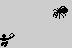
The same for the fast ant, from 9 cells. It skips only one frame in twenty, so MOVE_ANT overwrites the blast frame every time: what was drawn for it was $FB, $FF, $FB, $FF, $F8, $FB, $F8, $F9 -- an ant, spinning on the spot, never the blast -- and then it vanishes home. Read from the code and seen here; the grenade's own blast is drawn beside it.
Sprite frames drawn: $F4 (FRAMEF4), $F5 (FRAMEF5), $F6 (FRAMEF6), $F7 (FRAMEF7), $F8 (FRAMEF8), $F9 (FRAMEF9), $FB (FRAMEFB), $FF (FRAMEFF).
In the picture: $FB+$F4 (190ms), $FF+$F4 (150ms), $FB+$F4 (140ms), $FF+$F4 (140ms), $F8+$F4 (750ms), $FB+$F7 (140ms), $F8+$F6 (140ms), $F9+$F5 (140ms), - (550ms): 9 pictures, 2.3s in all.
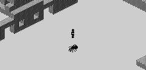
The boy three blocks up over a stunned ant (as the build's own scene stages it). He lands at height 1, on the ant's back: LANDED calls PARALYSE_ANT, which sets the ant's stun to $FF for good and runs script 16 (PARALYSED AN ANT !). From then on ANT_TURN does nothing for it, so it stays in the frame it had, and he stands on it.
Sprite frames drawn: $DD (FRAMEDD), $E5 (FRAMEE5), $ED (FRAMEED), $F8 (FRAMEF8), $F9 (FRAMEF9).
In the picture: $ED+$F8 x2 (270ms), $ED+$F9 (20ms), $E5+$F9 x3 (1740ms), $DD+$F9 (930ms): 7 pictures, 3.0s in all.
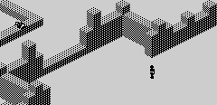
The first frames of a game, at the city gate, with 0, P, ENTER and SPACE pressed in turn for a frame each: READ_VIEW_KEYS sets the view to 3, 2, 1 and 0 and moves its origin (VIEW_ORIGIN) so the boy is in the same place on the screen. Views in the run: 0, 3, 2, 1, 0. The boy has not moved, but his frame changes with the view, since PROJECT_SPRITES adds the view to his facing; the blocks are drawn by DRAW_BLOCK or DRAW_BLOCK_TURNED, one for each pair of views (SELECT_BLOCK_DRAWER). Nothing animates a turn: each view is drawn whole, the next frame.
Sprite frames drawn: $DC (MORE_SPRITES), $DD (FRAMEDD), $DE (FRAMEDE), $DF (FRAMEDF).
In the picture: $DE (150ms), $DD (740ms), $DC (690ms), $DF (690ms), $DE (720ms): 5 pictures, 3.0s in all.
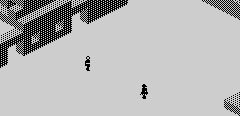
The girl waiting on open ground, stood up (BASIC starts her lying down, stunned), and the boy walking up to her. MOVE_RESCUEE measures the distance every frame; within three cells at the same height she is found -- her +$0D goes to 1 -- and script 12 ("MY HERO!" / "TAKE ME AWAY / FROM ALL THIS !") plays with its letters between the notes, inside that one frame of the game (read here every fiftieth of a second). Found on the fourth step. The whole play area, since that is where the words go.
Sprite frames drawn: $6E (FRAME6E), $72 (FRAME72), $DC (MORE_SPRITES), $E0 (FRAMEE0).
In the picture: $E0+$6E x2 (280ms), $DC+$6E (140ms), $E0+$6E (20ms), $DC+$6E x9 (4190ms), $DC+$72 (140ms), $DC+$6E (500ms): 15 pictures, 5.3s in all.
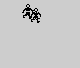
After that, V held with one frame of SYMBOL SHIFT to turn the corner. FOLLOW_PLAYER sets the girl's move bit while she is two to five cells from the boy and faces her along her way if one more step would leave her beside him, otherwise towards him; CHOOSE_FRAME animates her as it does him. She keeps one cell behind all the way: the distance, frame by frame, was 1, 1, 1, 1, 1, 1, 1, 1, 1, 1, 1, 1, 1, 1, 1. The view scrolled 9 times to follow them (SCROLL_VIEW); the picture stays fixed on the ground.
Sprite frames drawn: $6C (FRAME6C), $6F (FRAME6F), $70 (FRAME70), $73 (FRAME73), $DC (MORE_SPRITES), $DF (FRAMEDF), $E0 (FRAMEE0), $E3 (FRAMEE3).
In the picture: $E0+$70 (140ms), $DC+$6C (150ms), $E0+$70 (140ms), $DC+$6C (140ms), $E0+$70 (140ms), $DF+$6C (140ms), $E3+$73 (140ms), $DF+$6F (140ms), $E3+$73 (140ms), $DF+$6F (140ms), $E3+$73 (140ms), $DF+$6F (560ms): 12 pictures, 2.1s in all.
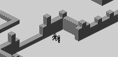
The boy just inside the gate, the girl following two cells behind, and V held. Outside the walls a coordinate is below $80; once both are out, CHECK_RESCUED sets her +$0D to 2 (BASIC's w), runs script 13 (CONGRATULATIONS !) -- its letters coloured one by one and the play area filled with colour after colour by the script's $7D codes -- and stores 1 in $B438, so PLAY returns to BASIC at the end of that frame. 4 frames of the game from the first step.
Sprite frames drawn: $6C (FRAME6C), $70 (FRAME70), $DC (MORE_SPRITES), $E0 (FRAMEE0).
In the picture: $E0+$6C x2 (280ms), $DC+$70 (150ms), $E0+$6C (160ms), $DC+$70 x26 (5700ms): 30 pictures, 6.3s in all.
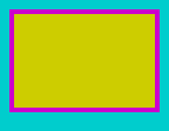
After the tenth rescue BASIC's line 95 runs line 3600: GO SUB 2000 clears the screen, POKE 46124,5 sets the border colour the sound routines use, and USR 36594 (FINAL_SCRIPT) runs script 17 (YOU ARE A REAL / AT LAST YOUR MISSION IS OVER! / YOUR NEW FRIENDS WISH TO / THANK YOU FOR SAVING THEIR / LIVES.); then BASIC draws the medal with CIRCLE, prints the score and waits, PAUSE 500, before line 2600's prompt and the wait for a key. This is BASIC running with interrupts on, read off the screen every fiftieth of a second, border and all: 41.0s from line 3600 to the key wait, and three seconds more to show the flashing. To get there, a first rescue is made by putting both people outside the walls, and as PLAY returns BASIC's sg is set to 8, so that line 90 counts it to 9 and BASIC sets up the tenth level itself; the second rescue is then the tenth. (Staged the quicker way, with fin set to 1 on the first level, the ending runs out of memory in line 3610's CIRCLE -- the first level's long story card is still in c$ -- and INTERRUPT restarts the game.)
In the picture: 516 pictures, 41.0s in all.